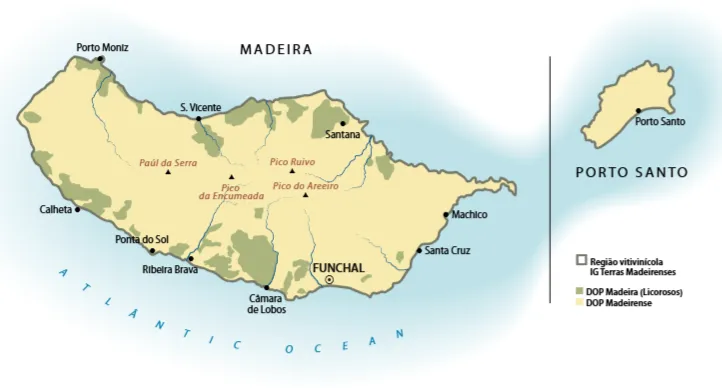
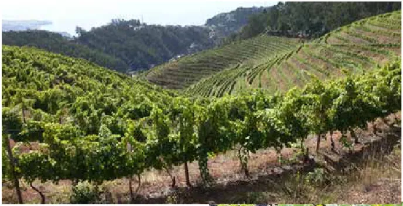
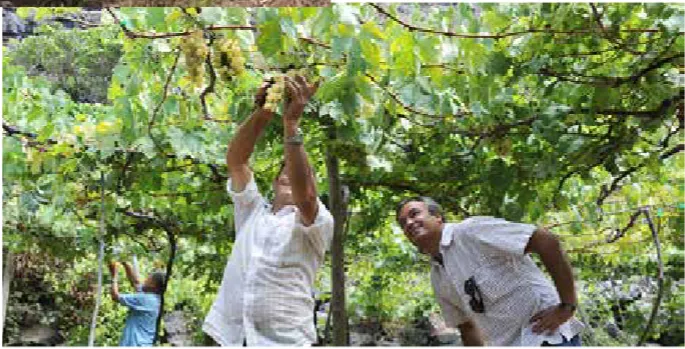
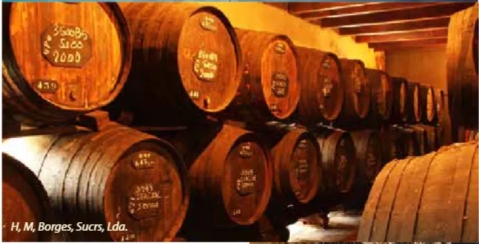

Chapter 4 · The Portuguese wine regions
Madeira Wine Region
Key figures (2022)
Viticultural area: 681 ha
Total Production: 30,565 hl
Average yield: 4,500 liters/ha
N.º commercial growers: 1,755
History
Discovered by Portuguese navigators in 1418, Madeira Island soon captured the attention of the Infante D. Henrique (Henry the Navigator), who deemed it ideal for the planting of grapevines and sugar cane. Accordingly, he sent for the Malvasia grapevine variety from the Greek island of Crete, which had originally been introduced to the island from Naples.Madeira wine acquired a great reputation. There are references documenting the first wine exports to England in 1456. By 1578, the exportation of wine had already become extremely important, and had become the island’s chief source of revenue. With the marriage of Charles II of England to the Duchess of Braganza, and Cromwell’s Anglo-Spanish war, the wines of the Portuguese archipelagos attracted even greater attention from the English. A wine called Malmsey (Malvasia) became a favourite of the English. With the fall of Constantinople and the occupation of Greece by the Ottoman Turks, Madeira wine took the place of the famous Greek liqueur wines esia, is in the subtropical region of the internationally, since under Ottoman rule distribution through the Venetian ports of the Greek product was prohibited. With advances in international maritime navigation, Madeira assumed an even greater importance. (VLQPRD) “Madeira”, which was already an export product in the 17th century The renown of Portuguese wine was such that the brother of King Edward IV was accused of homicide and condemned to death. As a close relative of the King, he was allowed to choose the method of execution and chose to be drowned in a vat of Malmsey. Shakespeare refers to Madeira wine in his plays, particularly in 2 Henry IV. The American Plagues of the 19th century put an end to the success of this wine. The hybrids condemned Madeira wine to the kitchen, where all they were good for was acidic sauces. It is only now, as a result of an excellent vineyard restructuring program involving the grafting of varieties onto American rootstocks, and the clonal selection of historical varieties during the 1980s, that the Vitis vinifera grapevine varieties of Madeira have returned to the former excellent oenological quality.

Terroir
(Source: Macedo, F. L., & Carvalho, M. Â. A. P. (2022).
The Expected Impact of Climate in the Grapevine Culture, in Madeira Region, Portugal. Journal of Agriculture and Environmental Sciences, 11(1), 20-29.)
Climate: The archipelago of Madeira belongs to the subregion of Macaron-
Atlantic Ocean. Madeira has sub-tropical climate, with warm summer months and temperate winters. The North Coast’s climate is temperate and subject to the north Atlantic winds, and therefore cooler and more humid.
Köppen-Geiger classification: group C (temperate): Csb (warm summer). The mild climatic conditions of the islands making up this archipelago are characterized by strong winds, stable temperatures owing to the proximity of the sea, and can be classified by Winkler index as zone IV (Favourable for high yields, but acceptable table wine quality) which comprises naturally sweet wines; but by climate change they my move to they moved to zone V.
MCC System indices (Tonietto & Carbonneau, 2004): The Helio-thermal Index (HI) is currently classified as Warm; if simulations become reality, it will change to Very Warm. The cool night index (CI) currently has ideal minimum temperatures; if the simulations become reality this classification will change from Temperate Nights to Warm Nights. The dryness index (DI) shows that currently and in the simulated scenarios, not all regions have to suffer from drastic water restrictions.
Average annual rainfall: The annual figures vary from 553 mm in Funchal to 3,084 mm in Arieiro, 1,182 mm in Ponta Delgada and 1,527 mm in Porto Moniz. On the other islands, rainfall is lower: Porto Santo has an average annual rainfall of 362 mm
Geology and soil science: Madeira Island covers a total area of 738 km2, and lies between the 30th and 33rd parallel North in the middle of the Atlantic Ocean. and gravelly volcanic and basaltic soils helped the grapevine conquer the island and transform the landscape of Madeira. Around 47% of the total area of Madeira Island is situated above 700 meters and woodlands and forests flourish in its soils. Some 66% of Madeira’s surface has a percentage gradient of slope greater than 25% and only 11.5% of the land has a percentage gradient of slope of less than 16%. The very many small parcels of farmland largely support a very intensive and varied mixed crop and stock farming system traditionally associated with the rearing of livestock and cultivation of maize, beans, potatoes, with grapevines on the plot’s periphery growing on trellises or fences similar to those found in Minho. On average, each covers an area of approximately 0.3 hectares. There are more than 5,000 such vineyard parcels The areas chosen for this crop are the sunny south facing slopes, where, because the vines grow tall, they provide other crops shelter from the elements, although vines are also found on low trellises, especially if very close to the sea.” (Excerpt from IVV Yearbook). The soils of Madeira are predominant of basaltic origin. They are clay based and have an acidic or very acidic pH level. These soils are acidic, rich in minerals, iron and phosphor, and with low levels of potassium, which all contribute to the trademark acidity of the wine. Vineyard elevation Due to the geography of the island, the vast majority of the vineyards are relatively small in size. ranges from sea level 800 metres, where vinyards can be found perched on small terraces known as poios.

Types of wine produced
IG Terras Madeirenses wines or Terras Madeirenses Regional Wines:
Red, white, rosé.w

Madeira DO wines: Liqueur wine less than five years old; Solera, with indication of age (5, 10, 15, 20, 30, or more than 40 years), with traditional mention in respect of the year of harvest (Garrafeira, Frasqueira [Vintage] and Colheita) and/or the production process used (Canteiro or Estufagem)
Madeirense DO wines: Red, white, rosé
Regional contacts
Technical information: Instituto do Vinho, do Bordado e do Artesanato de Madeira – IVBAM (Madeira Wine, Embroidery and Handicrafts Institute), Rua Visconde de Anadia, 44, 9050-020 FUNCHAL, Tel.: 291 224 791,
Website: www.vinhodomeideira.pt
Enotourism information: Instituto do Vinho, do Bordado e do Artesanato de Madeira – IVBAM (Madeira Wine, Embroidery and Handicrafts Institute), Rua Visconde de Anadia, 44, 9050-020 FUNCHAL, Tel.: 291 224 791,
Website: www.vinhodomeideira.pt; see also: CEHA, history – Madeira Wine Route: http://www.madeira-edu.pt/ LinkClick.aspx?fileticket=lc33pxrC- Ti8%3D&tabid=1487&language=pt-PT Cultural Cultural information on the
wine of the region: Confraria do Vinho da Madeira – IVBAM (Madeira Wine Association), Rua 5. De Outubro, 78, 9000-079 FUNCHAL, Tel.: 291 204 600, Website www.vinhomadeira.pt; The Museu da Vinha e do Vinho (Museum of
Vine and Wine) is situated on the experimental viticultural station, the Campo Experimental de Viticultura do Arco de S. Jorge, in the Santana municipality.
Contact: Instituto do Vinho, Tel 291 224 791, Website: https://vinhomadeira.com/ivbam/conheca-o-ivbam Institutions of higher learning and
viticultural research: Universidade da Madeira (University of Madeira), Funchal. Rectory building at the Colégio dos Jesuítas (Jesuit College) and the University Campus in Penteada (on the Caminho da Penteada), Tel.: + 351 291 209 400,
Website: www.uma.pt
Certification authority: IVBAM – Instituto do Vinho, do Bordado e do Artesanato da Madeira, I.P. (Madeira Wine, Embroidery and Handicrafts Institute) Rua Visconde de Anadia, n.º 44, 9050- 020 FUNCHAL, Madeira, Portugal; Tel.: 291 211 600, Fax: 291 224 791
Website: www.vinhomadeira.pt, e-mail: ivbam@gov.madeira.pt,



Producer and bottler information:
http://www.ivv.min-agricultura.pt/ np4/1736.html, Yearbook, p. 258. ivbam@gov.madeira.pt DOP Madeira DOP companies
Authorised Varieties for IGP Terras Madeirenses (Regional Wine)
Legal basis: Regional Decree n.º 1-A/2015/M of 9 January, Ministerial Order n.º 40/2015 and Ministerial Order n.º 396/2017

Varieties:
Red wines: Aragonez (Tinta Roriz, Tempranillo), Bastardo, Cabernet Sauvignon, Complexa, Deliciosa, Listrão (R), Malvasia Cândida Roxa (R), Merlot, Pinot Noir, Syrah (Shiraz), Tinta Barroca, Tinta Negra (Molar, Saborinho), Touriga ranca, Touriga Nacional and Triunfo.
White wines: Alvarinho Lilás, Arinto (Pedernã), Arnsburger, Caracol, Chardonnay, Chenin (Chenin Blanc), Folgasão, Malvasia Bianca, Malvasia Cândida, Malvasia de São Jorge, Malvasia Fina, Malvasia Rei, Moscatel Graúdo, Rio Grande, Sauvignon (Sauvignon Blanc), Sercial (Esgana Cão), Tália (Ugni Blanc, Trebbiano Toscano) and Verdelho.
Prestigious wineries
in the region: Henriques & Henriques - Vinhos, S.A.
Câmara de Lobos The Henriques family settled in the Câmara de Lobos area in the 15th century. At an elevation of 600–750 metres, Quinta Grande planted a new, 10-hectare vineyard, making it the largest continuous – unbroken –vineyard on the island. CAF – Madeira Vintners, CRL (Cooperativa Agrícola de Funchal) – 19,001 associados The Madeira Wine Company, S.A. is a leading producer of Madeira Wine.
Pereira d’Oliveira (Vinhos), Lda – Funchal
H. M. Borges, Sucrs, Lda. – Funchal. Vinhos Barbeito (Madeira), Lda. J. Faria & Filhos, Lda. Justino’s - Madeira Wines, S.A.